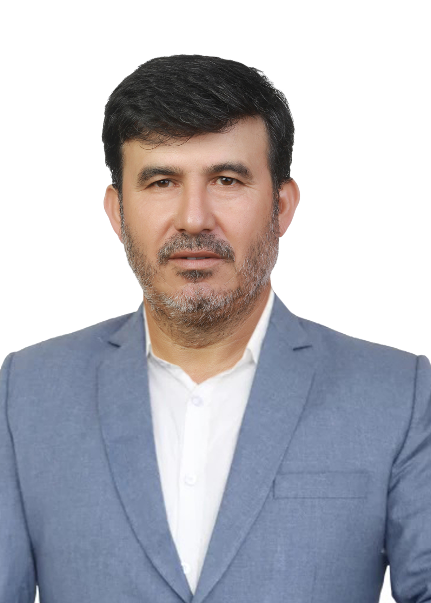

T.C.
Yeşilyurt Mahallesi
Muhtar Adayı Sadettin Gücük

Özgeçmişim
1970 yılında Anamur'un Demirören köyü, Gücükler Mahallesinde dünyaya geldim.
1985 yılında Cengiz Topel İlköğretim okulundan mezun oldum. DİBAŞ'ta alım-satım departman yetkilisi olarak iş hayatına atıldım.
Aynı iş yerinde aralıksız 10 yıl boyunca görev yaptıktan sonra, Yeşilyurt Mahallesinde şimdiki saat kulesi üzerinde bulunan Akoğlan Marketi açtım. 21 yıllık market hizmetime aynı yerde devam ediyorum.
Evli ve 3 babasıyım.

Neden Aday Oldum?
Esnaf olarak 21 yıldır aranızdayım. Mahallenin sorunlarını iyi biliyorum. Bir aciliyet sırası oluşturdum ve buna göre çözüm projeleri hazırladım. Eğer beni tercih ederseniz ekibimle beraber doğrudan çözüme gidecek ve sorunların giderilmesinde birebir öncülük edeceğim.
Ayağına çağıran değil;
Ayağınıza gelen olacağım
Ekibimle 7/24
mahallemin
sorunlarını çözmek için varız.

T.C.
Yeşilyurt Mahallesi Muhtar Adayı
Sadettin
Gücük
Azalarımız
Hıdır Poyraz
(Manav)
Celal Beram
(Terzi)
Ferhan Aslan
(Ziraat Mühendisi)
Soner Ardıç
(işçi Emeklisi)
Sadettin Doğan
(Kebapçı)
İsmet Altunöz
(Emekli TEDAŞ Şefi)
Günday Bulut
(Elektrikçi)
Veysel Durhan
(Emekli Kaptan)
Mahallem İçin
Hazırladığım
Projelerim
- Mahallemin gençlerini iş sahibi yapabilmek için bütün imkanlarımı seferber edeceğim.
- Özel günlerde ve törenlerde kullanılmak üzere masa, sandalye ve ses sistemi temin edeceğim.
- Mahallemimdeki özel ihtiyaçlı vatandaşlarımızı ve yaşlılarımızı tespit ederek yasalardan doğan haklarına sahip olmalarını sağlayacağım.
- Şu anda çok kötü durumda olan park-bahçe ve arka sokakları yetkililerle görüşüp, aydınlatma sistemini yenileterek ışıl ışıl yapacağım.
- Mahallemizi daha güzel ve yaşanır bir hale getirmek için ekibimle beraber siz değerli mahalle sakinlerimle sürekli fikir alışverişinde bulunacağım.
- Mahallemizin sosyal sayfasında istek ve şikayetlerin bildirerek hizmet takibi yapabileceğiz platform oluşturacağım.